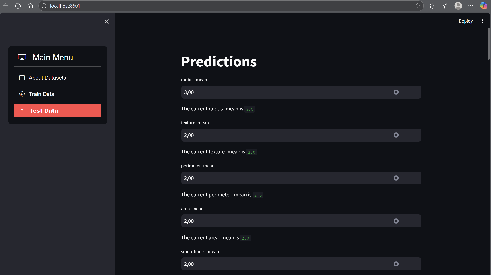
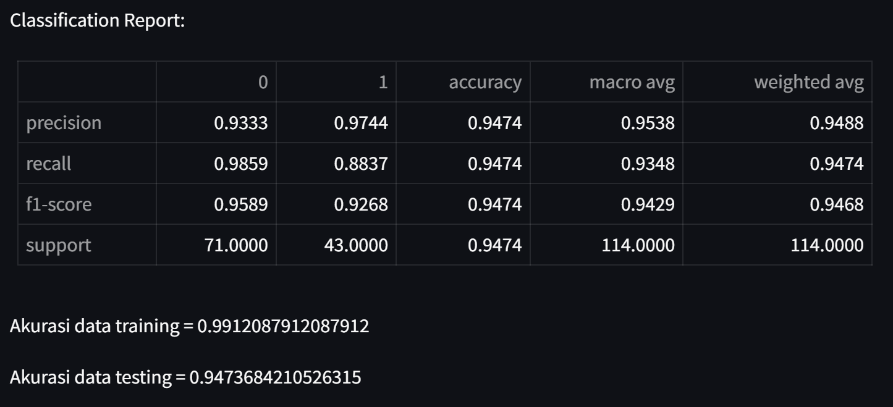

Breast Cancer Prediction
A Classification Project Using Decision Tree
Project Summary
This collaborative data mining project aimed to build a classification model to predict breast cancer using the Decision Tree algorithm. The dataset, sourced from Kaggle, was analyzed and preprocessed to ensure quality input. The team worked together to evaluate model performance and derive insights that can assist early cancer diagnosis through data-driven approaches.
Key Information
- Role: Team Member
- Tools: Python, Scikit-learn, Kaggle
- Duration: 2023
- Links: GitHub

The Process
1. Data Collection
Accessed and explored breast cancer datasets from Kaggle to understand feature distributions and class balance.
2. Data Cleaning
Handled missing values, encoded categorical variables, and normalized features for better model performance.
3. Modeling
Implemented Decision Tree Classifier from Scikit-learn and fine-tuned parameters using cross-validation.
4. Evaluation
Evaluated model performance using accuracy, confusion matrix, and feature importance analysis.
Results & Learnings
Key Outcomes
The final model achieved an accuracy of over 90% on the test dataset. Important features such as cell size and texture were identified as key indicators in predicting malignancy. The visualized decision tree helped explain model logic to non-technical stakeholders.
Lessons Learned
This project emphasized the importance of data preparation and explainability in healthcare models. Working in a team helped improve collaboration, division of tasks, and peer learning around algorithm implementation.
